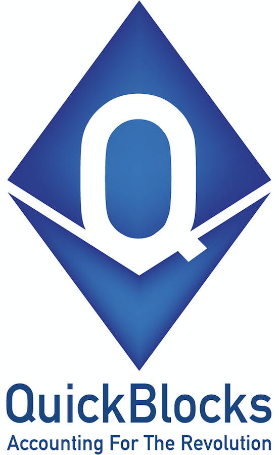

Introduction¶
{kind=link}
ENS is the Ethereum Name Service, a distributed, open, and extensible naming system based on the Ethereum blockchain.
ENS can be used to resolve a wide variety of resources. The initial standard for ENS defines resolution for Ethereum addresses, but the system is extensible by design, allowing more resource types to be resolved in future without the core components of ENS requiring upgrades.
Overview¶
The primary goal of ENS is to resolve human-readable names, like ‘myname.eth’, into machine-readable identifiers, including Ethereum addresses, Swarm and IPFS content hashes, and other identifiers. A secondary purpose is to provide metadata about names, such as ABIs for contracts, and whois information for users.
ENS has similar goals to DNS, the Internet’s Domain Name Service, but has significantly different architecture, due to the capabilities and constraints provided by the Ethereum blockchain. Like DNS, ENS operates on a system of dot-separated hierarchial names called domains, with the owner of a domain having full control over the distribution of subdomains.
Top-level domains, like ‘.eth’ and ‘.test’ are owned by smart contracts called registrars, which specify rules governing the allocation of their subdomains. Anyone may, by following the rules imposed by these registrar contracts, obtain ownership of a second-level domain for their own use.
Architecture¶
ENS has two principal components: the registry, and resolvers.
The ENS registry consists of a single central contract that maintains a list of all domains and subdomains, and stores three critical pieces of information about each:
- The owner of the domain
- The resolver for the domain
- The time-to-live for all records under the domain
The owner of a domain may be either an external account (a user) or a smart contract. A registrar is simply a smart contract that owns a domain, and issues subdomains of that domain to users that follow some set of rules defined in the contract.
Owners of domains in the ENS registry may:
- Set the resolver and TTL for the domain
- Transfer ownership of the domain to another address
- Change the ownership of subdomains
The ENS registry is deliberately straightforward, and exists only to map from a name to the resolver responsible for it.
Resolvers are responsible for the actual process of translating names into addresses. Any contract that implements the relevant standards may act as a resolver in ENS. General-purpose resolver implementations are offered for users whose requirements are straightforward, such as serving an infrequently changed address for a name.
Each record type - Ethereum address, Swarm content hash, and so forth - defines a method or methods that a resolver must implement in order to provide records of that kind. New record types may be defined at any time via the EIP standardisation process, with no need to make changes to the ENS registry or to existing resolvers in order to support them.
Namehash¶
Names in ENS are represented as 32 byte hashes, rather than as plain text. This simplifies processing and storage, while permitting arbitrary length domain names, and preserves the privacy of names onchain. The algorithm used to translate domain names into hashes is called namehash. Namehash is defined in EIP137.
In order to preserve the hierarchal nature of names, namehash is defined recursively, making it possible to derive the hash of a subdomain from the hash of the parent domain and the name or hash of the subdomain.
Terminology¶
- domain - the complete, human-readable form of a name; eg, ‘vitalik.wallet.eth’.
- label - a single component of a domain; eg, ‘vitalik’, ‘wallet’, or ‘eth’. A label may not contain a period (‘.’).
- label hash - the output of the keccak-256 function applied to a label; eg, keccak256(‘eth’) = 0x4f5b812789fc606be1b3b16908db13fc7a9adf7ca72641f84d75b47069d3d7f0.
- node - the output of the namehash function, used to uniquely identify a name in ENS.
Algorithm¶
First, a domain is divided into labels by splitting on periods (‘.’). So, ‘vitalik.wallet.eth’ becomes the list [‘vitalik’, ‘wallet’, ‘eth’].
The namehash function is then defined recursively as follows:
namehash([]) = 0x0000000000000000000000000000000000000000000000000000000000000000
namehash([label, …]) = keccak256(namehash(…), keccak256(label))
A sample implementation in Python is provided below.
def namehash(name):
if name == '':
return '\0' * 32
else:
label, _, remainder = name.partition('.')
return sha3(namehash(remainder) + sha3(label))
ENS on Ethereum¶
ENS is deployed on mainnet at 0x314159265dd8dbb310642f98f50c066173c1259b, where users may register names under the eth TLD, which uses an auction based registrar.
ENS is also deployed on the Ropsten testnet at 0x112234455c3a32fd11230c42e7bccd4a84e02010. Users may register names under two top level domains:
- .eth, which uses an auction based registrar with the same functionality as the main network, and allows users to keep names indefinitely; see Registering a name with the auction registrar.
- .test, which allows anyone to claim an unused name for test purposes, which expires after 28 days; see Registering a name with the FIFS registrar.
ENS is also deployed on the Rinkeby testnet at 0xe7410170f87102df0055eb195163a03b7f2bff4a, where only the .test top level domain is supported.
Resources¶
- EIP137 - Ethereum Name Service
- EIP162 - Initial ENS Registrar Specification
- ethereum-ens Javascript library
- Nick’s talk on ENS at DevCon 2: https://www.youtube.com/watch?v=pLDDbCZXvTE
- DevCon 2 talk slides: https://arachnid.github.io/devcon2/#/title
- Web interface for Ethereum enabled browsers: https://registrar.ens.domains